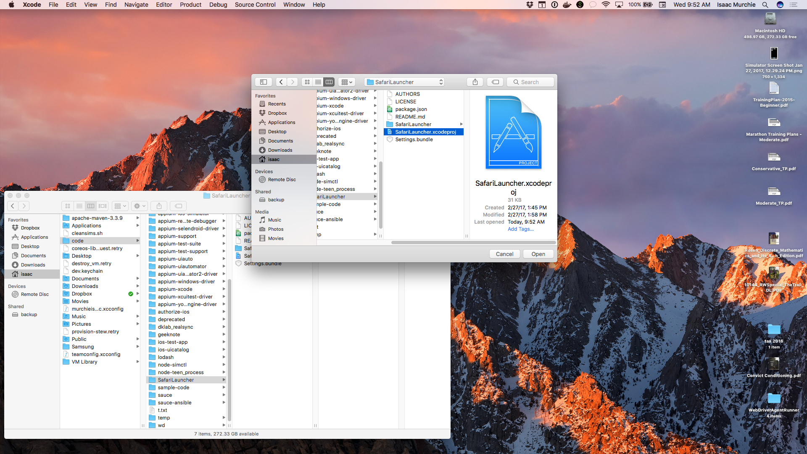
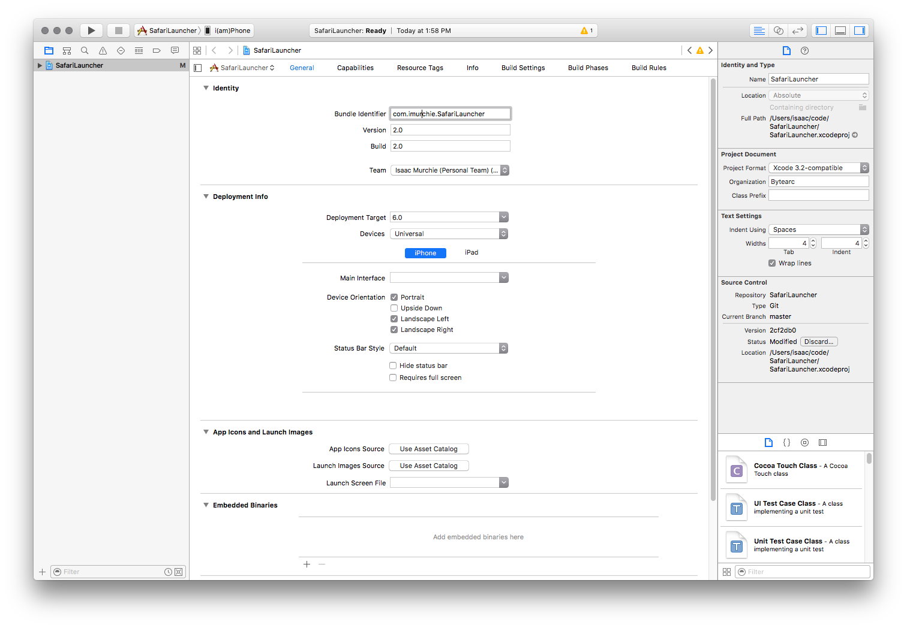
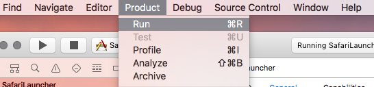

Mobile Web on iOS 9.3 and below Real Devices: SafariLauncher
Running mobile web tests on iOS real devices with iOS 9.3 or below, using Instruments,
requires the introduction of a third-party app, SafariLauncher.
This is necessary because with Instruments there is no way to start the Safari
app on the device. The SafariLauncher app just launches, and then launches
Safari. Simple!
In some configurations, Appium is able to automatically build, sign, and install
SafariLauncher as it needs, and there is nothing else necessary to be done. If,
however, this is not the case, as is more often so with later versions of
Xcode, the following configuration needs to
be done before Safari tests on real devices can be successfully run.
Automatic SafariLauncher configuration
The only thing needed for automatic SafariLauncher configuration is to create
a provisioning profile that can be used to deploy the SafariLauncher App.
This requires, in particular, a wildcard certificate, which is not possible if
your Apple developer account is a free one. If that is the case, skip to the
manual configuration below.
To create a profile for the launcher go into the Apple Developers Member Center and:
- Step 1: Create a new App Id and select the WildCard App ID option and set it to "*"
- Step 2: Create a new Development Profile and for App Id select the one created in step 1.
- Step 3: Select your certificate(s) and device(s) and click next.
- Step 4: Set the profile name and generate the profile.
- Step 5: Download the profile and open it with a text editor.
- Step 6: Search for the UUID and the string for it is your identity code.
Now simply include your UDID and device name in your desired capabilities:
{
udid: '...',
deviceName: '...',
platformName: 'iOS',
platformVersion: '9.3',
browserName: 'Safari'
}
Manual SafariLauncher configuration
Note: This procedure assumes you have Xcode 7.3 or 7.3.1.
It is possible to use the version of SafariLauncher that comes with the appium-ios-driver, but if you do, each time you update Appium the procedure will have to be done again.
To get a local copy of SafariLauncher, first clone it from GitHub:
git clone https://github.com/snevesbarros/SafariLauncher.git
Once you have a local copy of the source code for the SafariLauncher app, open
Xcode and then open the SafariLauncher project

In the SafariLauncher target pane you will see an error, saying that there needs
to be a provisioning profile for this app

In order to fix this, you first need to enter a "Bundle Identifier" for the app. The default
expected by Appium is com.bytearc.SafariLauncher, but this might not be available
for you to build. In that case, choose something else, and make note of it. Then
choose a "Team", and allow the provisioning profile to be created

Finally, make sure your device is connected to the computer, and choose it as the target
And run the build and install actions to compile the app and push it onto your device

Now you have a working SafariLauncher on your device. The app itself is a plain
screen that will launch Safari at the click of a button

The last step is only necessary if you chose a bundle identifier for the app that
is different from the default (com.bytearc.SafariLauncher). If you did, it is
necessary to send that to Appium when creating a session, using the bundleId
desired capability:
{
udid: '...',
deviceName: '...',
platformName: 'iOS',
platformVersion: '9.3',
browserName: 'Safari',
bundleId: 'com.imurchie.SafariLauncher'
}